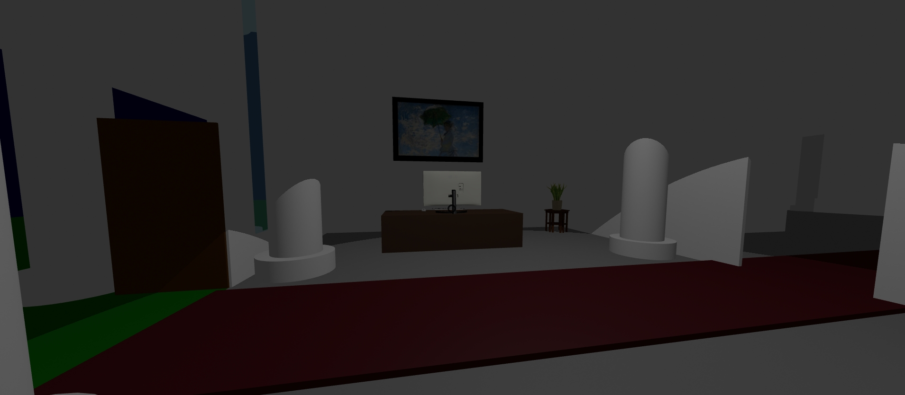

Museum 7 is a game similar to the formula of Exit 8, a game where you spot anomalies.
You'll spawn inside of the lobby.
The first level will be normal, then you'll have to guess if there is or isn't an anomaly as the levels progress.
Walk towards the door at the end of the hallway if you spot no anomalies, however, if you do spot something, exit through the front door.
PLEASE give the game a minute it takes a moment to let the assets load in, it's a lot of triangles.
